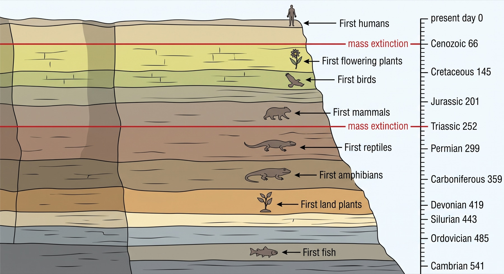
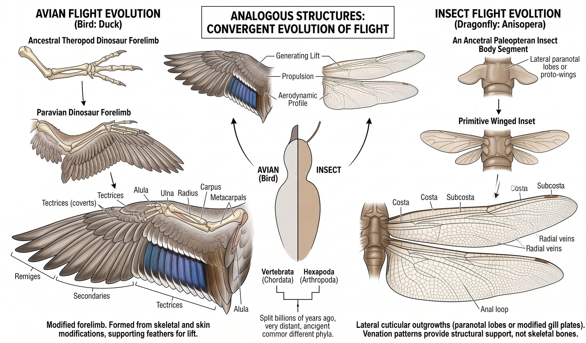
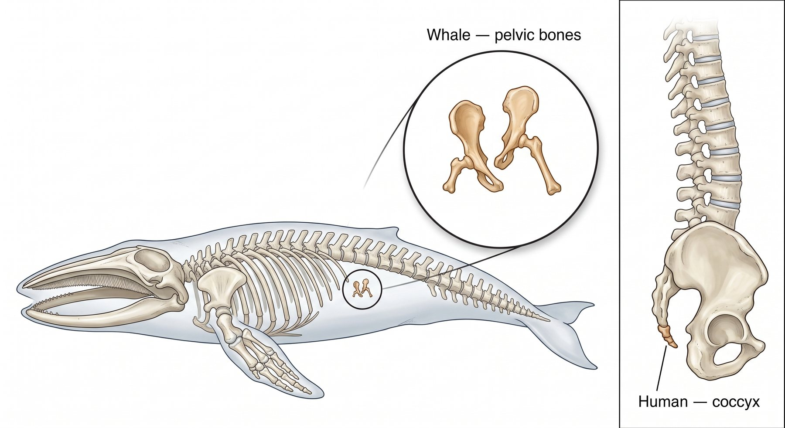
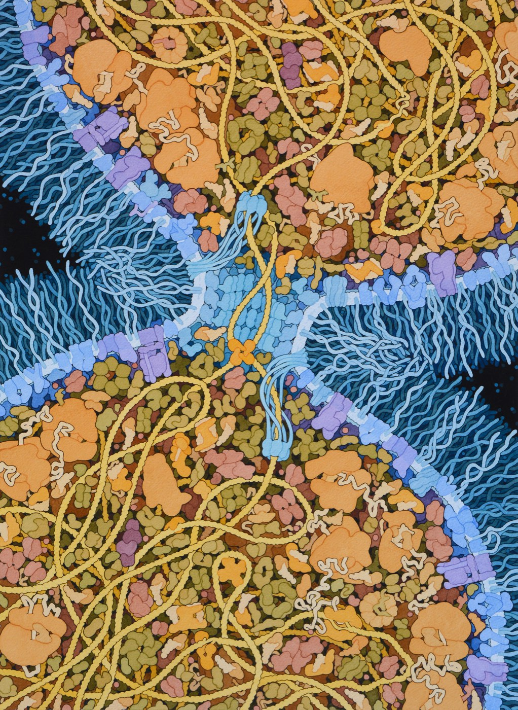
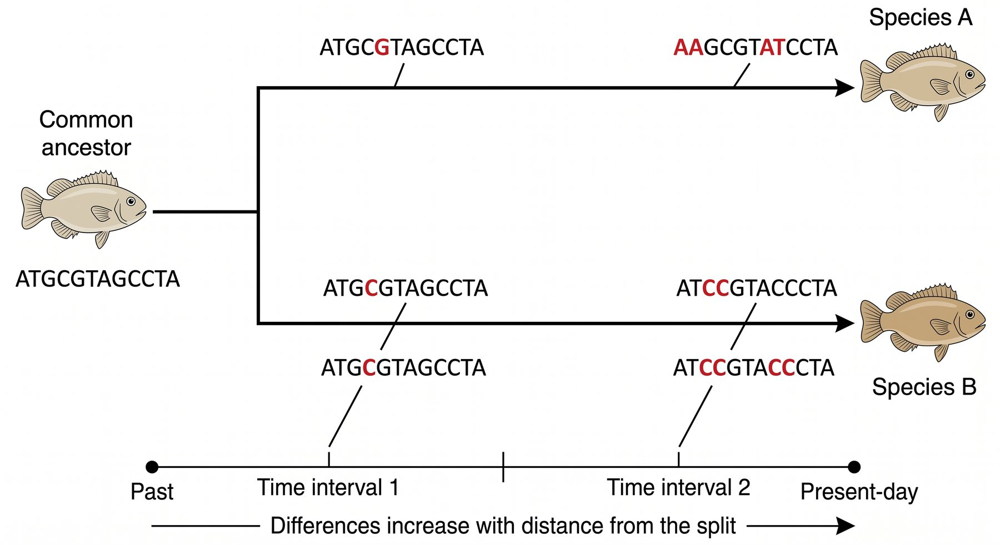
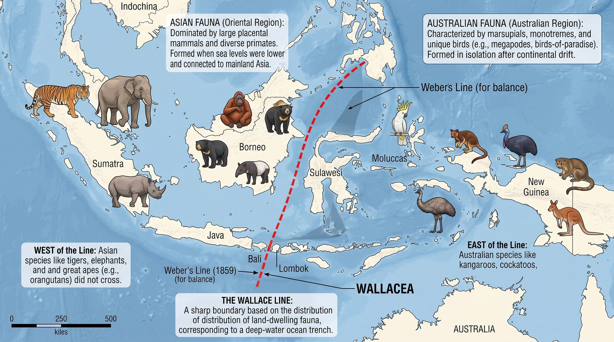

6.1 Evidence of Common Ancestry
Nobody watched the first mammal appear. So how can biologists claim, with real confidence, that a mouse and a shark share an ancestor? The answer is not one killer piece of evidence — it is five completely different kinds of evidence that all point the same way.
By the end of this chapter you should be able to
- Identify patterns across five independent lines of evidence: the fossil record, comparative anatomy, embryological development, molecular biology and biogeography.
- Explain how each line of evidence connects to the claim of common ancestry — not just state what it is.
- Distinguish homologous, analogous and vestigial structures, and say what each one does and does not tell you.
- Read a cladogram, and build one from a table of shared characteristics.
Before you start
You have already met most of the pieces this chapter needs, in earlier units. It is worth pulling them together before you go on.
From Unit 5, you know that traits are inherited — that DNA carries instructions, that those instructions are passed from parents to offspring, and that mutation can change them.
That is the foundation for everything in this unit. If instructions are copied from parent to offspring generation after generation, then two species descended from the same ancestor should still be carrying copies of the same instructions — changed by time, but recognisably related.
This chapter goes looking for exactly that.
One thing to hold on to as you read. Each of the five lines of evidence below is a different kind of clue — bones, embryos, molecules, rocks, maps. They were found by different scientists working in different fields, most of whom never spoke to one another. Keep asking yourself the same question each time: what would explain all of these at once?
The claim, and what would count as evidence
The claim is this: every living species descends, with modification, from earlier species — and if you trace any two species back far enough, you reach a common ancestor they share.
That is a claim about events nobody recorded. So biologists do what any scientist does with the deep past: they ask what the world should look like if the claim were true, and then go and check.
If species share ancestors, then organisms should carry traces of their history — bones they no longer need, embryos that resemble each other more than the adults do, molecules that are near-identical in species that look nothing alike. If every species were designed independently, there would be no reason for any of that.
Why five lines of evidence beat one
Each of the five lines below could, on its own, be argued with. Fossils are incomplete. Similar-looking bones might be coincidence. But the five are gathered by different scientists, using different methods, on different material — a palaeontologist splitting rock has nothing to do with a geneticist sequencing DNA.
When independent methods that could easily have disagreed instead produce the same family tree, coincidence stops being a reasonable explanation. That convergence is the actual argument, and it is what the standard means by "multiple lines of empirical evidence".
This is what your anchor guide's crosscutting concept — Patterns — is asking of you. You are not memorising five facts. You are looking for a regularity that runs across all five, and asking what single explanation accounts for it.
Line 1 — The fossil record
The fossil record is the collection of preserved remains and traces of past life. Its power comes from one fact: fossils are found in layers, and lower layers are older.
That ordering turns the record into a timeline. And the timeline has structure that would be very strange without common ancestry:
- Groups appear in a consistent order. Fish appear before amphibians; amphibians before reptiles; reptiles before mammals and birds. No one has ever found a rabbit in rock older than the first mammals.
- Transitional forms exist. Tiktaalik has a fish's scales and fins alongside a neck and load-bearing wrist bones. Archaeopteryx has feathers and a wishbone alongside teeth and a bony tail. These are exactly the intermediates common ancestry predicts.
- Extinct forms outnumber living ones. Over 99% of species that have existed are gone — consistent with a long history of lineages branching and dying out.

A gap in the fossil record is not evidence against evolution. Fossilisation is extraordinarily rare — it needs rapid burial in the right sediment, and the rock has to survive millions of years and then be found. The surprise is not that there are gaps; it is that we have as complete a record as we do.
Darwin published On the Origin of Species in 1859, working almost entirely from fossils, anatomy and biogeography. He had no genetics — Mendel's work was unknown to him and DNA was a century away. That later evidence could have demolished his explanation. Instead it backed him up. That is a large part of why the theory is trusted today.
Line 2 — Comparative anatomy
Compare the forelimbs of a human, a whale, a bat and a cat. They do utterly different jobs — grasping, swimming, flying, walking. Engineered separately for those jobs, they should look nothing alike.
They are built from the same bones, in the same order.
![Four columns: human, whale, bat and cat. Each shows a grey outline of the animal with a circle around its front limb, and a leader line opening into an enlarged view of that limb's skeleton below. In every one of the four, the same bones appear in the same order: a single red humerus, then two blue bones, the radius and ulna, then a cluster of yellow carpals, then teal digits. Only the proportions differ. The human has a long arm and five moderate digits. The whale has a short stout humerus and short thick digits packed inside a flipper. The bat has four enormously elongated digits spreading the wing membrane, plus a short clawed thumb at the leading edge. The cat has a long limb and short digits. A note reads: not drawn to the same scale.](../images/u6/homologous-forelimbs.jpeg)


Three kinds of structure, three different meanings
| Type | What it is | What it tells you |
|---|---|---|
| Homologous structure | Same underlying structure, different function — the limbs above | Shared ancestry. The similarity was inherited |
| Analogous structure | Same function, different underlying structure — a bird's wing and an insect's wing | Not ancestry. Similar selection pressures, solved separately |
| Vestigial structure | A reduced remnant that has lost most of its function — the pelvis bones of a whale | Shared ancestry. A leftover from an ancestor that used it |
The distinction that matters: homologous structures are evidence of ancestry; analogous structures are not. A bird's wing and a bat's wing are analogous as wings — but the bones inside them are homologous, because both are modified tetrapod forelimbs. Same pair of animals, two different answers depending on which level you compare. Say which you mean.
Whales have a pair of small bones floating in the muscle where a pelvis would be, unattached to any spine and supporting no legs. On its own this is a curiosity. Placed next to the fossil sequence — Pakicetus, Ambulocetus, Rodhocetus, each with progressively reduced hind limbs — it stops being a curiosity and becomes a prediction confirmed. Two independent lines, one answer.
Line 3 — Embryological development
Early vertebrate embryos are far more alike than the adults they become. A fish, a chicken, a pig and a human embryo all develop a tail and a series of pharyngeal arches — folds in the neck region. In fish these arches become gill supports. In humans they become parts of the jaw, the middle ear and the larynx.
A human embryo has no use for structures that build gills in a fish. It develops them because it inherited the developmental programme that builds them, and evolution modified the later steps rather than deleting the early ones.
The resemblance is closer than you would guess. Shown an early embryo on its own, most people cannot say whether it is a fish, a chicken, a pig or a human. Try it for yourself in the activity below — the difficulty is the point.
HOX genes
HOX genes are the genes that lay out an animal's body plan from head to tail — which segment becomes head, which becomes thorax, where limbs appear. They are the reason this line of evidence became so powerful in recent decades.
The same HOX genes, in the same order along the chromosome, control body layout in a fruit fly and in a mouse. They are so similar that a mouse HOX gene inserted into a fly embryo can substitute for the fly's own version. Animals separated by more than 500 million years still run recognisably the same code.
Notice the pattern repeating across the lines of evidence: not "these organisms are similar", but "these organisms are similar in ways that serve no current purpose". Inherited history explains that. Independent design does not.
Line 4 — Molecular biology
Every living thing stores information in DNA, uses the same four bases, and reads that code with almost exactly the same rules to build proteins from the same twenty amino acids. A bacterium and an oak tree use the same genetic dictionary.
There is no chemical reason it had to be this dictionary. That every organism uses it points to a single origin.

The finer pattern is more useful still. Compare a protein that all organisms need — cytochrome c, part of cellular respiration — across species, and count the amino acid differences from a human:
| Organism | Amino acid differences from human cytochrome c |
|---|---|
| Chimpanzee | 0 |
| Rhesus monkey | 1 |
| Horse | 12 |
| Chicken | 13 |
| Tuna | 21 |
| Yeast | 44 |
Read the pattern, not the numbers. The molecular differences line up with the tree already built from bones and fossils — organisms anatomists group together also turn out to be closest in their proteins. A geneticist counting amino acids and a palaeontologist splitting rock arrive at the same family tree, having never used each other's data.

Molecular clocks
The differences are not just a ranking — they can be turned into a date. Some genes accumulate mutations at a roughly steady rate over long periods, because most of their changes are neutral and so are neither favoured nor removed by selection. A gene like that acts as a molecular clock.
If you know the rate, you can work backwards. Suppose a gene accumulates about one base-pair difference per million years in each lineage. Two species differing by 90 base pairs have accumulated those changes along two separate branches since they split — roughly 45 base pairs down each. That puts their common ancestor around 45 million years ago.
Reading that worked example is one thing; doing the calculation is another, and the divide-by-two step is where almost everyone slips. Set the age and the rate below, read the differences off the model, then try to work the age back out.
Date the split
InteractivePress New split for a fresh pair of species and work out the age each time. Then try these:
- Deliberately forget to divide by two and check the answer. What does the model tell you, and how does the diagram show you the mistake?
- Set the rate low and the age high. Watch the measurable differences stop keeping up with the changes on the branches. Why does the clock stop working for very old splits?
- Set the age to 1 or 2 million years with a slow rate. How many differences are there to count — and could you date this split reliably?
Two cautions that matter when you use a clock:
Divide by two. Both lineages have been changing since the split, so the differences between them accumulated along two branches, not one. Forgetting this doubles your estimate.
Different genes tick at different rates. A gene under strong selection changes slowly, because most mutations in it are harmful and get removed. Rapidly changing genes date recent splits well; slowly changing genes are needed for ancient ones. Choosing the wrong clock for the timescale gives a confident, useless answer.
Molecular clocks are calibrated against the fossil record — a split whose date is known from fossils fixes the rate, which can then be applied to lineages with no good fossils. That is worth noticing: it is two independent lines of evidence being used together, each supplying what the other lacks.
Cytochrome c is not a random choice of protein. You met it in Unit 2 — it is part of cellular respiration, the process every one of these organisms uses to release energy from food.
That is why it works so well here. A protein doing a job this essential cannot change much without breaking, so differences build up very slowly. Small differences between two species therefore mean a very long shared history.
"Humans share 60% of their DNA with a banana" gets quoted as if it were absurd. It is not a trick — it reflects that a banana and a human are both eukaryotic organisms that must run respiration, copy DNA and build ribosomes, and the genes for that core machinery were inherited from a shared ancestor. The similarity is the evidence.
Line 5 — Biogeography
Biogeography asks a simple question: why do particular species live where they do?
If species were placed independently, you would expect each to sit wherever its environment suits it — the same climate should get roughly the same organisms everywhere. That is not what we find.
- Island species most resemble the nearest mainland, not the most similar climate. The Galápagos finches resemble South American finches, though the islands' climate is nothing like the mainland's.
- Isolated landmasses carry distinctive groups. Australia's mammals are overwhelmingly marsupial — the lineage that was there when it separated, then diversified in isolation.
- Related species cluster geographically. Species on neighbouring islands are usually each other's closest relatives, exactly as you would expect if a founding population arrived and then diverged.

Deserts on different continents contain plants that look remarkably similar — swollen water-storing stems, spines instead of leaves. American cacti and African euphorbias are the classic pair. But they are not closely related; their internal structure and flowers differ completely. Same problem, same solution, separate lineages — analogous, not homologous. Biogeography and anatomy together catch what either alone might miss.
Putting it together: reading a cladogram
A cladogram summarises all of that evidence as a branching diagram of who is most closely related to whom — a hypothesis about phylogeny, the evolutionary history of a group.
A cladogram shows ancestry. The naming system — order, family, genus, species — groups organisms according to it, so the two diagrams are really the same diagram. Each rank is a box drawn round a branch, and every box sits inside a bigger one.
Classify these carnivores
InteractiveHow to read one
- Branch points are common ancestors. The point where the lizard and mouse lines meet represents a population that was ancestral to both.
- Closeness is measured by branch points, not by distance along the page. A salamander is more closely related to a mouse than to a shark, because you pass fewer branch points getting from salamander to mouse.
- A mark applies to everything after it. "Four limbs" sits before the salamander branches off, so salamander, lizard and mouse all have four limbs — and the shark and lamprey do not.
- Order along the edge means nothing. Branches can be rotated at any node without changing the relationships. Do not read the tip order as a ranking or a sequence.
The two most common errors, both worth checking your own answers for:
Nothing on a cladogram evolved "from" anything else on it. The mouse did not evolve from the lizard. They share an ancestor, which was neither a mouse nor a lizard.
The rightmost tip is not the most advanced. Every species on the diagram is equally modern — each lineage has been evolving for exactly the same length of time.
Video by the Genetic Science Learning Center, University of Utah, from Learn.Genetics. Used for educational purposes; all rights remain with the University of Utah.
Building one from a table
To construct a cladogram, group by shared derived characteristics — features that are new to a group rather than inherited from further back:
- List species and their characteristics in a table.
- Pick an outgroup — the species with fewest of the characteristics. It branches off first.
- Count how many species share each characteristic. The one shared by most appeared earliest, so it marks the earliest branch.
- Work inwards: each next characteristic marks the next branch point.
- Check your tree by reading it back — each species should end up with exactly the characteristics the table gives it.
Reading the five steps is not the same as being able to do them. Work through the table below — a different set of animals from the one in Figure 6.9, so you have to apply the method rather than remember the answer.
Build a cladogram
InteractiveTry it with the data in the cytochrome c table above. Using only those numbers, where would you place the tuna relative to the horse and the chicken? Then check your answer against Figure 6.9 — does the molecular data give you the same tree shape as the anatomical characteristics? That agreement is the whole argument of this chapter.
Where this leaves us
Five independent kinds of evidence, all pointing at the same family tree. Fossils order the past. Anatomy shows inherited body plans reshaped for new jobs. Embryos reveal stages that only make sense as leftovers. Molecules put a number on relatedness. Geography explains why species live where they do.
Taken together, that is a strong case that species share ancestors. But look carefully at what it does not include.
Nothing in this chapter explains how a population changes. You have evidence that it happened, and a tree showing what descended from what — but no mechanism. Without one, "species share ancestors" is a pattern nobody can account for.
6.2 supplies the mechanism, and it turns out to need only three ordinary facts about living things.
Check your understanding
Two parts. The quick check marks itself and tells you which section to go back to if something is shaky. The written questions after it are the harder — and more useful — practice, because explaining in your own words is what the summatives actually ask for.
Quick check
A bird's wing and a butterfly's wing both produce flight. What does this similarity tell you?
These are analogous structures. Similar function with different underlying structure means the resemblance was not inherited — two lineages solved the same problem separately. Only homologous structures, which share an underlying plan even when the job differs, are evidence of ancestry.
A whale's flipper and a bat's wing contain the same bones in the same order — one upper bone, two lower bones, wrist bones, then digits — yet one swims and one flies. What does this similarity tell you?
The giveaway of homology is a shared plan persisting where the function gives no reason for it. A flipper and a wing have no engineering need for the same bone sequence — so the sequence was not designed for the job, it was inherited and then modified.
Someone argues that gaps in the fossil record are evidence against evolution. What is the best response?
An organism has to die in the right conditions, be buried quickly, survive millions of years as rock, and then be found. The surprise is how much we have, not how much is missing. And the fossils we do have appear in a consistent order, with transitional forms like Tiktaalik exactly where common ancestry predicts.
The fossil record puts fish before amphibians, amphibians before reptiles, and reptiles before mammals. Which single find would genuinely count as evidence against that order?
A claim worth trusting has to be breakable, and this one is: a single well-dated fossil in the wrong layer would wreck it. Millions of fossils later, nobody has found one. That is why the gaps are a nuisance rather than a problem.
Two species differ by 60 base pairs in a gene that changes at about one base pair per million years in each lineage. Roughly when did they share a common ancestor?
Both lineages have been changing since they split, so the 60 differences accumulated along two branches — about 30 in each. Divide by two. Forgetting this is the most common error with molecular clocks, and it doubles your answer.
Two species split about 15 million years ago. A gene accumulates roughly two base-pair differences per million years in each lineage. Roughly how many differences should you find between the two species today?
The clock runs down both branches, so going forwards from a date you multiply by two, and going backwards from a count of differences you divide by two. It is the same fact used in either direction, and it is the step that catches people out.
Human embryos develop pharyngeal arches — folds in the neck that become gill supports in fish. Why is this evidence for common ancestry?
The pattern that runs through this whole chapter: organisms are alike in ways that serve no current purpose. Inherited history explains that. Independent design does not.
A mouse HOX gene inserted into a fly embryo can stand in for the fly's own version and lay out the body correctly. Why is that evidence for common ancestry?
The more fundamental a shared feature is, the further back it was inherited. Genes that decide where a head and limbs go sit near the base of the animal tree, which is why a mouse version still makes sense to a fly.
Cacti in American deserts and euphorbias in African deserts both have thick water-storing stems and spines instead of leaves, but differ completely inside. What does this show?
Same problem, same solution, separate lineages — convergent evolution producing analogous structures. Notice how two lines of evidence work together here: geography raised the question, and anatomy answered it.
Islands only a few kilometres apart on either side of the Wallace Line have much the same climate, yet one side carries tigers and elephants and the other carries tree kangaroos and cockatoos. What does this show?
Biogeography gets its evidence from the mismatch between where organisms are and where environment alone would put them. The channels along the line stay deep even when sea levels fall, so the two faunas were never joined by land — and history, not climate, is what the distribution records.
On a cladogram, a mouse appears at the far right and a lamprey at the far left. What does that position tell you?
Relatedness is read from branch points, not from left-to-right position. A cladogram is like a mobile hanging from the ceiling — you can spin any branch and the relationships are unchanged.
Using Figure 6.9, which animal shown is the lizard's closest relative?
Closeness is a question of how recently two lineages last shared an ancestor. The characteristic appearing latest on the path to a species is the one that picks out its nearest relatives — which is why the amniotic egg, not four limbs, settles this.
Explain it yourself
These take longer and are worth more. Write your answer before opening the response — comparing what you wrote with a full answer is where most of the learning happens.
A dolphin's flipper and a shark's fin are both used for swimming and look similar from the outside. Are they homologous or analogous? Explain what each answer would imply.
Analogous. Both are swimming surfaces shaped by the same selection pressure — moving efficiently through water — but their internal structure differs. Inside the dolphin's flipper is a tetrapod forelimb: humerus, radius and ulna, carpals and digits, inherited from a land-dwelling ancestor. A shark's fin has no such bones; it is supported by cartilaginous rays.
If they were homologous, it would be evidence that dolphins and sharks share a recent common ancestor with that structure. Because they are analogous, they tell us about shared environment, not shared ancestry. The dolphin's flipper is homologous with a bat's wing and a human's arm — which is the relationship that carries the ancestry evidence.
Why do biologists treat five separate lines of evidence as stronger than a large amount of evidence from just one?
Because the lines are independent. Fossils, anatomy, embryos, molecules and geographic distribution are gathered by different researchers using different methods on different material, and each could have contradicted the others. Molecular sequencing in particular arrived a century after Darwin and could have produced a completely different family tree.
More evidence from a single method can only ever strengthen that one method — and any systematic flaw in it would be reproduced, not exposed. When independent methods that had every opportunity to disagree converge on the same tree, common ancestry is the only explanation that accounts for the agreement itself.
Using Figure 6.9: is a salamander more closely related to a shark or to a mouse? Justify your answer using the diagram, and state what evidence would change it.
To the mouse. Relatedness is read from branch points, not from position on the page. The salamander and mouse share a more recent common ancestor — the one marked by "four limbs" — while the shark branches off earlier, before that characteristic appeared. The salamander shares four limbs with the lizard and mouse but not with the shark.
What would change it: consistent evidence placing the branch points elsewhere — for example molecular data showing salamanders are genetically closer to sharks than to mice, or fossils showing four limbs arose separately in amphibians and in amniotes. A cladogram is a hypothesis about ancestry, and new evidence revises it.